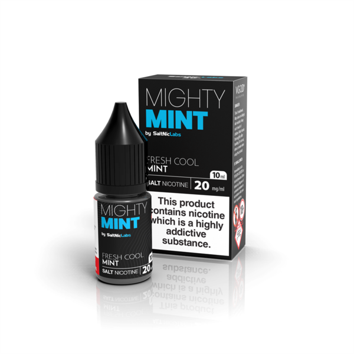

Saya akan Menjelaskan Apa itu Liquid Saltnic !!! Dulu para perokok akan bingung melihat vape. Benda elektronik kecil ini mempunyai kemampuan untuk mengeluarkan cloud yang tebal. Sekarang kita para vaper mulai bingung melihat para podder (okay ini nama yang jelek untuk para pengguna pod). Liquid 50mg, apa mereka gila? Hari ini kita akan belajar singkat mengenai apa itu salt nicotine. Mungkin di akhir artikel ini kamu akan tertarik untuk mencobanya, karena harus saya akui pod system sangat berguna dibeberapa momen tertentu
Liquid Saltnic
Liquid Saltnic Nicotine yang ada di daun tembakau alami sebenarnya mengandung salt (namun bukan dalam bentuk garam dapur). Jadi terlepas dari konsepsi umum, salt nicotine adalah bentuk alami dari nicotine. Masalahnya adalah karena mengandung salt, nicotine jadi lebih sulit diserap tubuh. Ini berarti kamu harus mengonsumsi banyak tembakau untuk bisa merasakan efek nikotinnya. Tapi semua ini berubah di tahun 1960 ketika perusahaan Phillip Morris (rokok Marlboro) menemukan cara untuk meningkatkan tendangan nikotin di rokok tanpa harus menambah jumlah tembakau. Caranya adalah dengan memproses tembakau dengan amonia. Ini menjadikan nicotine lebih nendang atau lebih efektif. Proses dengan amonia ini melepaskan muatan positif (yang didapat dari salt) yang ada di nikotin sehingga diserap tubuh lebih baik. Selanjutnya nicotine tipe ini kita sebut sebagai freebase nicotine. Semua rokok pabrikan modern dan juga liquid vape menggunakan freebase nicotine karena lebih efektif (dan juga adiktif) dibanding nicotine alami.
 Salt nicotine!!!Mengapa salt nic mempunyai nikotin yang sangat Tinggi?
Alasan pertama adalah walaupun sudah mudah diserap tubuh (karena benzoic acid) namun tidak berarti sangat-sangat mudah. Nicotine tetap ditambahkan lebih untuk mengakomodasi penyerapan yang tidak 100% efektif. Alasan kedua adalah karena desain industri. PAX (perusahaan Juul) mungkin ingin menjual lebih dari sekedar liquid, jadi mereka juga merancang mod sendiri yang praktis dan mendapatkan keuntungan. Tidak semua orang ingin menenteng mod 3 baterai dengan lebih dari 15 setting bukan? Mereka membuat device yang kecil tanpa setting sehingga mudah digunakan. Device kecil datang dengan baterai kecil dan daya yang kecil juga, sehingga penguapan nicotine menjadi tidak efektif karena tenaganya yang kecil. Jalan keluarnya? Tambahkan nicotine lagi
Apakah Salt nic Berbahaya??
ibanding tidak mengonsumsi nicotine sama sekali. Ya lebih berbahaya. Dibanding liquid freebase? Belum ada penelitian jangka panjang mengenai hal ini. Ada yang bilang benzoic acid berbahaya di suhu tinggi, tapi karena pod system menggunakan watt kecil maka masih relatif aman. Ada juga penelitian yang mengatakan di 300 derajat pun benzoic acid masih stabil dan tidak terurai atau bereaksi. Kesimpulannya adalah belum ada penelitian yang konklusif mengenai efek jangka panjang bencozic acid. Bisa saja ada efek negatif yang besar, bisa jadi tidak ada apa-apa. Sebagai pengingat hal yang sama juga terjadi di liquid vape biasa (freebase), belum ada penelitian jangka panjang yang konklusif dan dunia terbagi atas dua bagian besar, pro dan kontra. Namun ada satu hal yang bisa berpotensi berbahaya. Salt nic adalah nicotine yang sangat smooth, throat hit minimal dan rasanya tidak terlalu tebal. Artinya kamu bisa saja menghisap terlalu banyak dan tidak menyadarinya, setelah sesaat nicotine yang banyak ini mulai melepaskan efeknya dan jika terlalu banyak kamu bisa keracunan nicotine dengan tanda-tanda: Mual
Sakit perut Pusing Nafas tidak beraturan Lemas Namun biasanya tidak fatal, istirahat beberapa jam dan badan akan membaik. Jika kamu pertama kali mencoba salt nic, jangan hisap terlalu banyak, hisap 1-3x dan biarkan nicotine bekerja sebelum menghajarnya lagi. Setelah ini kamu dapat mengetahui seberapa baik tubuh kamu menghadapi salt nic.